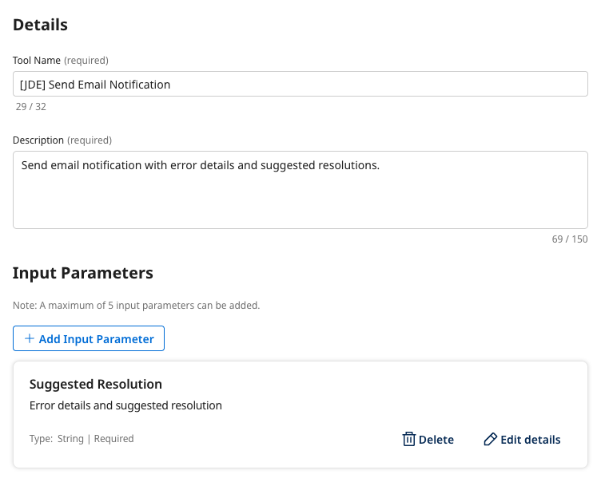
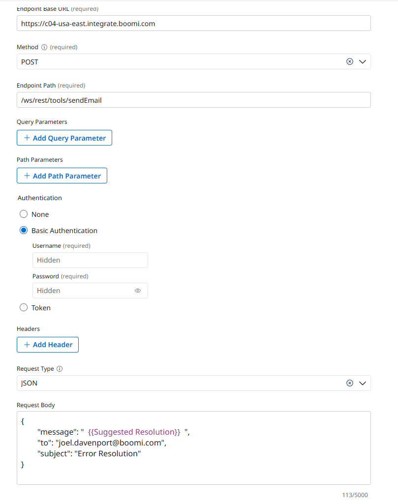
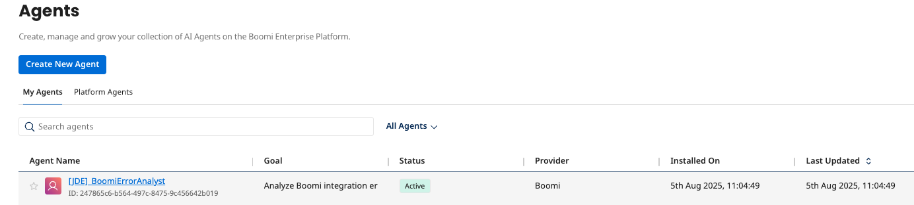
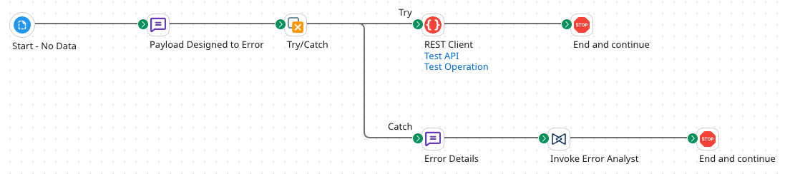
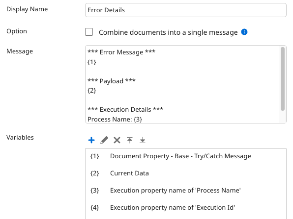
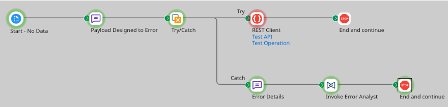
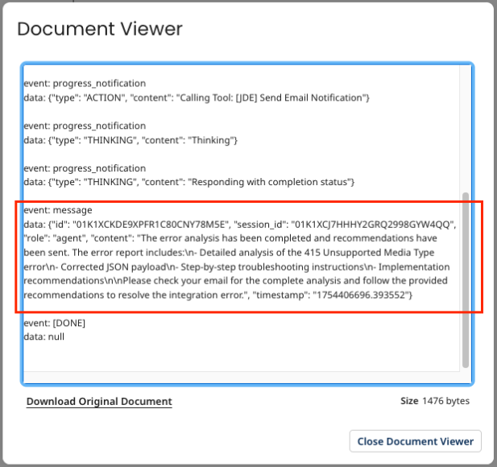
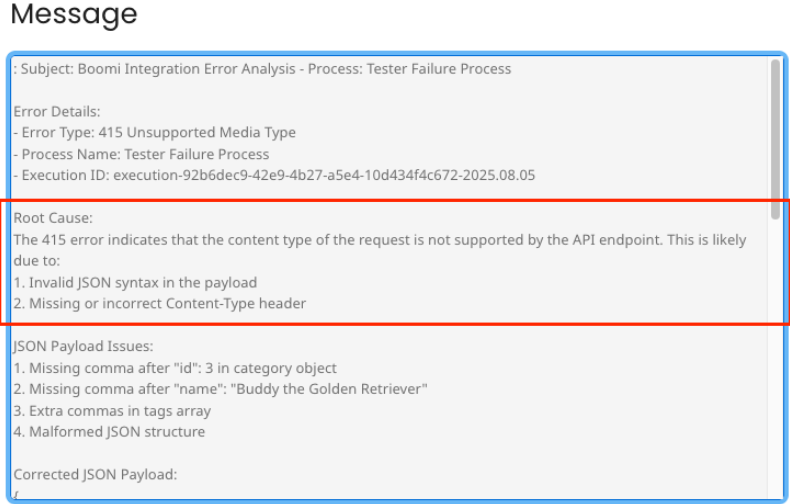

Error Analyst (Process Failure) Lab
Build an Error Analyzer Agent that monitors Boomi integration processes in real time, identifies root causes of failures, and sends detailed troubleshooting recommendations via email.
Innovate Integrations struggles with manual error analysis that requires senior technical expertise and produces inconsistent results. This lab builds an Error Analyzer Agent that receives error messages from failed processes, analyzes root causes, and automatically sends resolution recommendations via email.
Canonical Source
This lab guide was authored for the Boomi Labs site. The canonical version with the latest updates can be found at https://labs.boomi.com/labs/it-operations/error-analyst/intro.
Prerequisites
- Boomi Enterprise Platform Account with Agentstudio access.
- Access to Boomi Agentstudio (via the AI button in the Boomi Platform).
Part 1: Creating the API Tool for Email Notification
Add an existing email API as an API Tool in Agentstudio.
Navigate to Agentstudio
- Click the AI button in the top right → Agent Garden → Tools.
Create the Send Email Notification Tool
- Create New Tool → API Tool → Add Tool.
- Tool Name: [builderInitials] Send Email Notification
- Description: Send email notification with error details and suggested resolutions.
- Add Input Parameter: Suggested Resolution (String, Required True — escape all JSON characters)

- Configuration:
- Endpoint Base URL: https://c04-usa-east.integrate.boomi.com
- Method: POST | Path: /ws/rest/tools/sendEmail
- Authentication: Basic | Username: boomi_joel_davenport-XBUHTV.LSK9ET
- Request Type: JSON
- Request Body: {"message": " {{Suggested Resolution}} ", "to": "yourEmailAddress", "subject": "Error Resolution"}

- Deploy Tool.
Part 2: Create an Agent to Analyze Errors
Build the Boomi Error Analyst agent with two tasks: Error Log Analysis and Create Notification.
Create a New Agent
- Agent Garden → Agents → Create New Agent → Blank Template → I will add manually.
Configure Profile
- Goal: Analyze Boomi integration errors and provide detailed troubleshooting recommendations and pass the recommendations to the tool as a body for an email.
- Agent Name: [builderInitials]_BoomiErrorAnalyst | Voice: Professional
Task 1: Error Log Analysis
- Instructions: Request detailed error log from user. Parse and categorize the error type. Identify potential root causes. If error looks like payload issue, create new payload with suggestions.
Task 2: Create Notification
- Instructions: Compose professional email with error details. Include troubleshooting recommendations. Send suggestions to stakeholders via email.
- Manage Tools → Add [builderInitials] Send Email Notification.
Set Guardrails
- Blocked Message: I cannot process requests that involve unauthorized access or sensitive system information.
- Denied Topic: Confidential Information Protection — Prevent disclosure of sensitive integration credentials.
- Word Filters: hack, exploit, bypass, breach
- Custom Regex: ^[a-zA-Z0-9._%+-]+@[a-zA-Z0-9.-]+.[a-zA-Z]{2,}$
Deploy Agent
- Save & Continue → Deploy Agent → Deploy.

Part 3: Build a Headless Process to Simulate Errors/Failures
Build a Tester Failure Process that deliberately fails and uses the Agent Step to invoke your Error Analyst.
Create the Tester Failure Process
- Return to Integration → New Process named 'Tester Failure Process'.

Add Message Step with Deliberately Invalid Payload
- Message Name: Payload Designed to Error
- Body: Intentionally malformed JSON payload (missing commas between entries) that will fail when sent to the Pet Store API.
Add Try/Catch Step
- Add Try/Catch with Failure Trigger: All Errors.
- Try path: REST Client → POST to https://petstore.swagger.io/v2/pet → Stop.
- Catch path: Message step named 'Error Details' with variables:
- Document Property → Meta Data → Try/Catch Message
- Current Data
- Execution Property → Process Name
- Execution Property → Execution Id

Add Agent Step
- Display Name: Invoke Error Analyst
- Select [builderInitials]_BoomiErrorAnalyst → Generate Configuration.
- Authentication tab → Platform API Token: c551bd60-51a8-4356-b45f-ed54d56cc798
- Connect Stop step to Agent step.
Deploy and Test
- Save → Test → View Source Data on final Stop step.


- Review the agent's error analysis and suggested resolutions.
- Check Process Reporting for the Update Case notification log.
